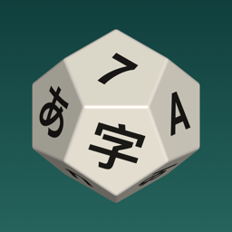

隐私政策 · Privacy Policy
Any Dice · 生效日期 Effective 2026-09-11
简短版本
Any Dice 不收集任何个人数据。没有账号、没有广告、没有统计分析、没有追踪，也不会把任何数据发到我们的服务器——我们没有服务器。
存在你手机上的东西
你做的骰子、组合、皮肤和设置（语言、外观、声音开关等）只保存在你自己的设备上，删除 app 就会一起删除。我们看不到这些内容。
购买
Plus 通过 Apple 的 App Store 购买。付款和购买记录由 Apple 处理，我们拿不到你的付款信息或 Apple 账号信息。购买状态由 Apple 的 StoreKit 在你的设备上验证。
传感器
「甩手机掷骰」会读取设备的运动传感器，只在设备上用来识别甩动的动作，不记录也不上传。可以在设置里关掉。
儿童
本 app 不收集任何人的个人信息，包括儿童。
变更与联系
如果这份政策有变化，会更新本页面并修改上方的生效日期。有任何问题请联系 alanfeiyuchang@gmail.com。
The short version
Any Dice does not collect any personal data. There are no accounts, no ads, no analytics, no tracking, and nothing is sent to our servers — we don’t have any.
What stays on your device
The dice, sets, skins and settings you create (language, appearance, sound toggles, and so on) are stored only on your own device and are removed when you delete the app. We can’t see any of it.
Purchases
Plus is purchased through Apple’s App Store. Payment and purchase records are handled by Apple; we never receive your payment details or Apple Account information. Your purchase is verified on your device by Apple’s StoreKit.
Sensors
“Shake to Roll” reads the device’s motion sensors on the device only, to recognize a shake. Nothing is recorded or uploaded, and you can turn it off in Settings.
Children
The app does not collect personal information from anyone, including children.
Changes and contact
If this policy changes, this page will be updated along with the effective date above. Questions? Contact alanfeiyuchang@gmail.com.